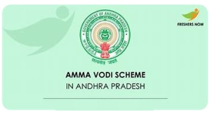
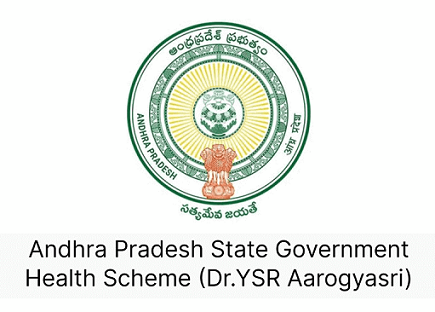
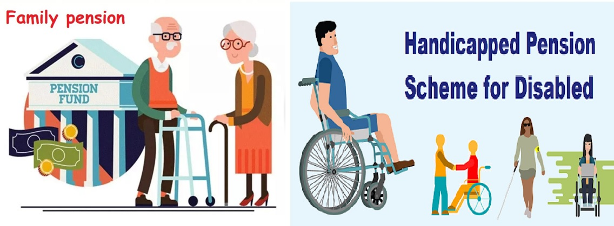
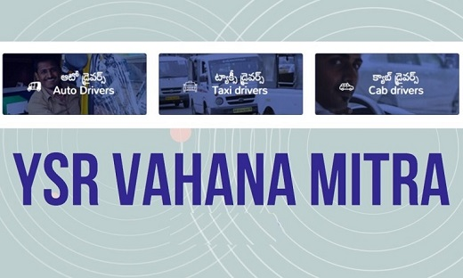

INTRODUCTION
Government schemes play a vital role in supporting citizens, particularly those facing economic hardship. These schemes provide financial assistance, essential services, and other benefits that can significantly improve people's lives. However, a critical challenge lies in ensuring that those eligible for these schemes are aware of them and have access to the application process.
This project aims to bridge this gap by identifying individuals currently availing government schemes in a specific area. The focus of this project is on AC Nagar, located in the SPSR Nellore District. Through a survey conducted across fifty households within the locality, the project seeks to gather data on the utilization of government schemes.
This initiative serves a dual purpose. Firstly, it provides valuable insights into the current reach of these programs within the target community. Secondly, by identifying those not currently benefiting from relevant schemes, the project can play a crucial role in raising awareness and promoting accessibility.
Jagananna Vidya Deevena/ Ammavodi Scheme
Jaganna Vidya Deevena (JVD) and Amma Vodi are two significant welfare schemes introduced by the Andhra Pradesh government in India to support education for students from economically weaker sections. Jaganna Vidya Deevena focuses on providing full fee reimbursement to students pursuing ITI, polytechnic, degree, and professional courses, ensuring that financial constraints do not hinder their educational aspirations. On the other hand, Amma Vodi aims to reduce the dropout rate by offering direct financial assistance to mothers or guardians of school-going children from Class I to XII, including intermediate education. Both schemes are designed to promote higher education and reduce the economic burden on families, thereby contributing to the overall socio-economic development of the state.

YSR Arogya Sri
YSR Arogya Sri is a flagship health insurance scheme initiated by the government of Andhra Pradesh, India, aimed at providing comprehensive medical coverage to economically disadvantaged sections of society. Launched in 2007, this scheme ensures access to quality healthcare services by covering the costs of treatment for serious ailments and major surgeries at network hospitals, both public and private. The program focuses on alleviating the financial burden of healthcare expenses for poor families, thereby promoting health equity. Under YSR Arogya Sri, beneficiaries are entitled to free medical services, including consultations, diagnostics, hospitalization, and post-operative care, for a wide range of diseases and conditions. The scheme's robust network of hospitals and streamlined claim process make it a pivotal component of the state's public health infrastructure.

YSR Pension Scheme
The Andhra Pradesh Pension Scheme, also known as the YSR Pension Kanuka, is a social welfare initiative launched by the Government of Andhra
Pradesh aimed at providing financial assistance to the vulnerable sections ofsociety. Thisscheme targets various categories of beneficiaries including the elderly, widows, disabled individuals, weavers, and transgender persons, offering them a monthly pension to ensure financial stability and social security. The initiative reflects the government's commitment to inclusive development and aims to uplift the socio-economic status of disadvantaged groups by ensuring they receive regular monetary support. By implementing this scheme, Andhra Pradesh strives to promote the well-being and dignity of its citizens, particularly those facing economic hardships.

YSR Vahana Mitra Scheme
* The YSR Vahana Mitra Scheme, launched by the Andhra Pradesh government in India, is a social welfare initiative aimed at providing financial assistance to auto-rickshaw and taxi drivers. Introduced by Chief Minister Y.S. Jagan Mohan Reddy, this scheme addresses the economic challenges faced by these drivers, particularly those from economically disadvantaged backgrounds. Under the YSR Vahana Mitra Scheme, eligible beneficiaries receive an annual grant of Rs. 10,000 to help cover maintenance costs, insurance premiums, and other essential expenses associated with their vehicles. This financial support is intended to ensure that drivers can maintain their vehicles in good condition, thereby sustaining their livelihoods and improving their quality of life. The scheme is a part of the broader efforts by the state government to enhance social security and economic stability for vulnerable sections of society.
